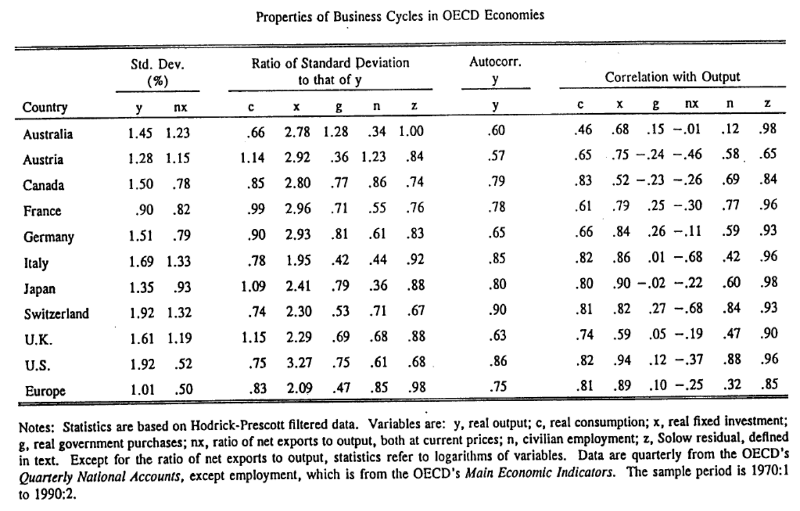
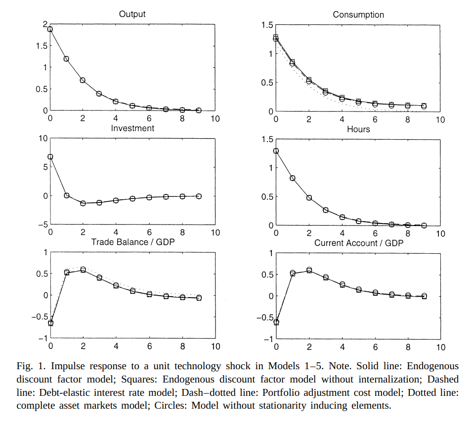

Petite Économie Ouverte (IRBC)
Macro II - Fluctuations - ENSAE, 2025-2026
2026-03-25
Introduction et faits stylisés
Pourquoi une petite économie ouverte ?
Quelles sont les raisons classiques d’ouvrir l’économie au commerce ?
- intégration commerciale
- goût pour la variété
- avantage comparatif
- intégration financière
- lissage des chocs / assurance
Du modèle RBC au modèle IRBC
Les modèles RBC ont connu un très grand succès pour reproduire les cycles économiques
- victoire (temporaire) contre la vision keynésienne selon laquelle les fluctuations de court terme résultent de chocs de demande
Il n’a pas fallu longtemps avant que la même méthodologie soit appliquée aux cycles économiques internationaux
Article fondateur :
- International Real Business Cycles, Backus, Kehoe, Kydland (1992)
Grand succès méthodologique :
- les faits en contradiction avec les prédictions théoriques ont été appelés « puzzles »
Faits empiriques des IRBC

Moments
D’après Kehoe,Kydland (1995)
Faits empiriques des IRBC

Faits stylisés
Au niveau national :
- la production est plus volatile que la consommation
- la production est autocorrélée
- la productivité est fortement procyclique
- autres variables corrélées positivement avec la production
- balance commerciale est fortement contracyclique
Au niveau international :
- production corrélées positivement entre les pays
- correlations de la consommation nettement plus faible
- Puzzle de Backus-Kehoe-Kydland
Pouvons-nous reproduire ces moments avec un modèle de cycles économiques ?
Modélisation d’une petite économie ouverte
Modèle de dotation
L’agent représentatif maximise : \[\max_{c_t} \sum_{t=0}^{\infty} \beta^t u(c_t)\] \[c_t + a_{t} \leq y_t + (1+r) a_{t-1} \]
Économie de dotation :
- le revenu \((y_t)_t\) est donné de manière exogène
- par souci de simplicité, on suppose qu’il est déterministe
Petite économie ouverte :
- ouverte : peut épargner \(a_t\) ce qui rapporte \(a_{t+1}(1+r)\) à la période suivante
- petite : le pays considère le taux d’intérêt mondial \(r\) comme donné (pas d’effet sur les prix mondiaux)
Nous résolvons ce problème avec les conditions aux limites :
\(a_{-1}\) donné1
\(\lim_{T\rightarrow\infty} \frac{a_{T}}{(1+r)^T}\geq0\)
- condition pas de schéma de Ponzi
La condition de pas de Ponzi va effectivement éliminer les solutions divergentes.
Dans une approximation au premier ordre, elle sélectionne les bonnes valeurs propres.
Modèle de dotation (3)
Nous obtenons le Lagrangien :
\[\mathcal{L}= \sum_{t=0}^{\infty} \beta^t u(c_t) + \sum_{t=0}^{\infty} \beta^t \lambda_t \left(y_t + (1+r) a_{t-1} - c_t-a_{t} \right)\]
Conditions du premier ordre :
\[\begin{align} u^{\prime}(c_t)& =& \lambda_t \\ \lambda_t &=& \beta (1+r) \lambda_{t+1} \end{align}\]
Sous l’hypothèse technique \(\beta (1+r)=1\) nous obtenons \(c_t=c_{t+1}\) et donc
\[c_0 = \frac{r}{1+r}\left\{ (1+r) a_{-1} + \sum_{t=0}^{\infty} \frac{y_t}{(1+r)^t}\right\}\]
- la consommation est déterminée par le revenu permanent
- les changements de richesse initiale ont des effets permanents
- remarque : problème isomorphe aux décisions d’épargne-consommation
Compte courant
Rappels sur le compte courant
La balance commerciale est les exportations moins les importations (ici \(y_t-c_t\))
Le compte courant est la balance commerciale plus les revenus nets de facteurs (ici \(y_t-c_t+r a_{t-1}\))
Un compte courant positif : prêt supplémentaire au reste du monde.
En utilisant la formule d’avant
\[CA_0 = a_{-1} r + (1-\frac{r}{1+r}) y_0 - \frac{r}{1+r}\left\{ \sum_{t\geq1}^{\infty} \frac{y_t}{(1+r)^t}\right\}\]
Comment le compte courant réagit-il aux chocs de revenu ?
le compte courant réagit positivement à un choc de revenu temporaire
et négativement aux anticipations de chocs futurs de revenu :
- C’est l’approche intertemporelle du compte courant
Racine unitaire
Reprenons la formule de la consommation : \[c_0 = \frac{r}{1+r}\left\{ (1+r) a_{-1} + \sum_{t=0}^{\infty} \frac{y_t}{(1+r)^t}\right\}\]
Rappelons aussi l’équation d’accumulation des actifs étrangers : \[a_t = (1+r) a_{t} + y_t - c_t\]
Lorsque \(a_{-1}\) augmente de \(\Delta a_{-1}\), alors \(c_0\) augmente de \(r \Delta a_{-1}\).
En conséqence \(a_0\) augmente d’exactement \(\Delta a_{-1}\) (car \(a_0 = (1+r) a_{-1} + y_0 - c_0\)).
En itérant le raisonnement, \(a_1, a_2, ...\) augmentent aussi d’exactement \(\Delta a_{-1}\).
Et les consomations \(c_1, c_2, ...\) augmentent d’exactement \(r \Delta a_{-1}\).
Une augmentation de la richesse initiale a un effet permanent sur les actifs étrangers et la consommation.
- cela correspondra à une racine unitaire dans la solution (valeur propre de module 1)
Ajout du capital
Nous ajoutons le capital et la production à notre économie de dotation : \[y_t = z_t k_{t-1}^\alpha\] \[k_t = (1-\delta) k_{t-1} + i_{t}\]
La contrainte de ressource agrégée devient :
\[a_{t} + c_t + i_t = (1+r) a_{t-1} + y_t\]
On maximise alors \(\sum_t \beta^ t U(c_t)\)
Nous obtenons les conditions du premier ordre
\[\lambda_t = \beta \lambda_{t+1} (1+r)\] \[\lambda_t = \beta \lambda_{t+1}\left[ (1-\delta) + z_{t+1} f^{\prime}(k_{t}) \right]\]
où \(\lambda_t\) est le multiplicateur de Lagrange associé à la contrainte budgétaire.
Ajout du capital : conditions d’optimalité
Puisque \(\lambda_t>0\) (la contrainte est toujours active), nous obtenons :
\[(1-\delta) + z_{t+1} f^{\prime}(k_{t}) = 1+r\]
\[k_{t} = \left( \frac{r+\delta}{\alpha z_{t+1}}\right)^{\frac{1}{\alpha-1}}\]
et l’investissement \[i_t = \left( \frac{r+\delta}{\alpha z_{t+1}}\right)^{\frac{1}{\alpha-1}}- (1-\delta)\left( \frac{r+\delta}{\alpha z_{t}}\right)^{\frac{1}{\alpha-1}}\]
Ici l’investissement est entièrement déterminé par les chocs de productivité
- trop simple : pas de dépendance internationale
Ajout de frictions à l’investissement
Une solution possible : modifier la contrainte de ressource de sorte que l’ajustement du capital soit coûteux
Par exemple :
\[a_{t} + c_t + i_t + \frac{\omega}{2}\frac{(k_{t}-k_{t-1})^ 2}{k_t} = (1+r)a_{t-1} + z f(k_{t-1})\]
\[k_{t} = (1-\delta) k_{t-1} + i_t\]
où \(\omega\) est un paramètre de friction d’ajustement.
En général, \(\omega\) est choisi de sorte que le modèle reproduise \(\frac{Var(i_t)}{Var(y_t)}\) à partir des données.
🔜 Cf tutoriel.
Un modèle de petite économie ouverte de référence
Un modèle de petite économie ouverte de référence
Closing Small Economy Models, Schmitt Grohe and Uribe (2003), JIE
- modèle de petite économie ouverte avec production, arbitrage consommation-loisir et coûts d’ajustement du capital
- = RBC + ouverture + coûts d’ajustement
- réalise un matching de moments
- compare différentes façons de stationnariser
Le modèle
\[\max_{c_t, n_t} \sum_{t=0}^{\infty} \beta^t u(c_t, n_t)\]
\[c_t + k_{t} + a_{t} = y_t + g_t - \frac{\omega}{2}(k_{t}-k_{t-1})^2 +(1-\delta) k_{t-1} + (1+r^{\star}+{\color{red}\pi(a_{t-1})})a_{t-1}\] \[y_t = f(k_{t-1}, n_t, z_t)\]
\[z_{t+1} = \rho z_t + \epsilon_{t+1}\]
et \[u(c, n) = \frac{1}{1-\sigma}\left(c^{\psi}(1-n)^{1-\psi} )\right)^{1-\sigma}\]
Le terme \(\color{red}\pi\) est là pour rendre le modèle stationnaire.
Comment se débarrasser de la racine unitaire ?
Idée générale :
- introduire une force qui tire le niveau des actifs étrangers vers l’équilibre
Schmitt Grohe and Uribe (2003) considèrent de nombreuses options :
- taux d’intérêt élastique à la dette : \[1+r = 1+r^{\star} + \pi(a_d)\]
- avec \(\pi(0)=0\) et \(\pi^{\prime}(0)>0\)
- \(\pi\) peut être compris comme une prime de risque sur l’augmentation de la dette
- facteur d’actualisation endogène (alias préférences à la Uzawa) \[\beta(c_t) = (1+c_t)^{-\chi}\]
- coûts d’ajustement pour les portefeuilles internationaux
SGU montrent que le choix du dispositif de stationnarisation a peu d’effet sur la dynamique (moments) de la plupart des variables
Calibrage
| Paramètres | Valeurs |
|---|---|
| \(σ\) | 2 |
| \(ψ\) | 1.45 |
| \(α\) | 0.32 |
| \(ω\) | 0.028 |
| \(r\) | 0.04 |
| Paramètres | Valeurs |
|---|---|
| \(δ\) | 0.1 |
| \(ρ\) | 0.42 |
| \(σ²\) | 0.0129 |
| \(A^{\star}\) | -0.7442 |
| \(χ\) | 0.000742 |
Résultats

Conclusions
- Le modèle reproduit assez bien les corrélations inconditionnelles
- Le dispositif de stationnarisation a peu d’effet sur les moments
- Les corrélations conditionnelles ne sont pas très bonnes
- une limitation de la méthode de matching de moments ?
- La corrélation de la consommation avec la production est trop élevée
- et la corrélation internationale des consommations est trop élevée dans le modèle
- … toujours le puzzle de Backus-Kehoe-Kydland…
Comment rendre la distribution stationnaire ?
La solution du modèle présente une racine unitaire :
\[a_t = a_{t-1} + ... \text{autres variables en t-1} + \text{chocs en t}\]
Problème :
Cela soulève des problèmes pratiques (notamment pour l’estimation) pour le modèle linéaire.